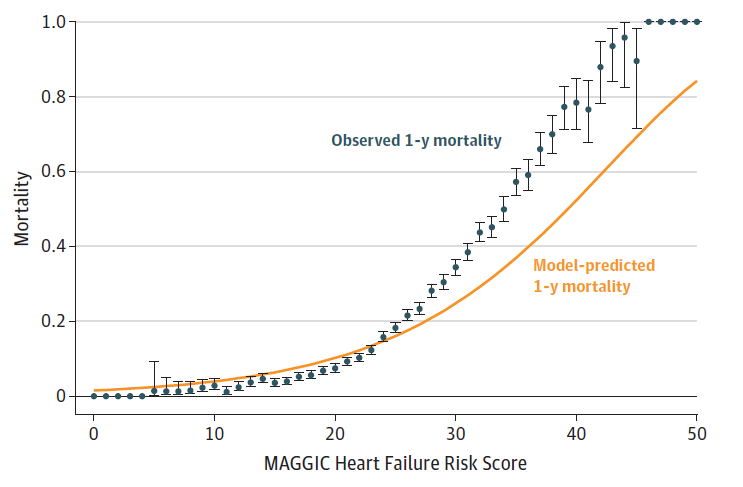
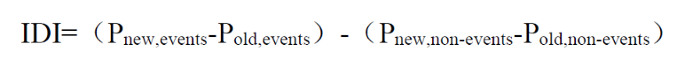
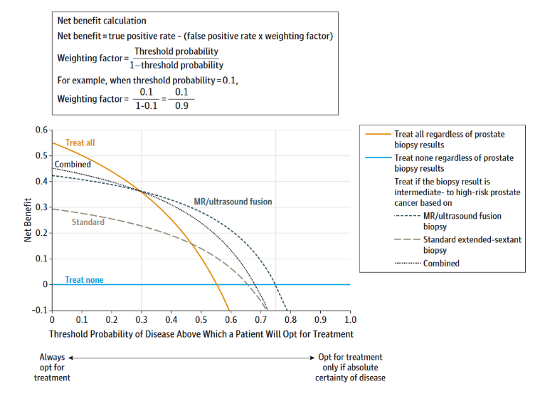
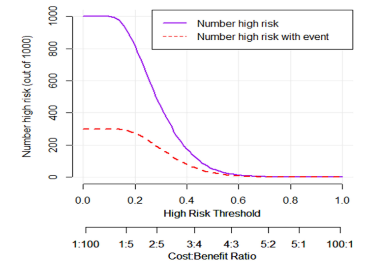

17 临床预测模型的评价方法
前面几篇都是建立模型，并可视化模型的内容，后面就涉及到模型评价的内容了。
当我们建立好预测模型后，如何评价我们的模型好坏呢？
当我们建立了很多不同的模型，如何评价不同模型之间的优劣呢？
这一篇主要就是讲这些，其实就是一些概念的理解，但不理解也问题不大，只要你会计算，会画图，写文章时把这些指标都写上就够了！
目前模型评价的主要内容都是来自于2017年发表于JAMA上面的一篇文章：Discrimination and Calibration of Clinical Prediction Models: Users’ Guides to the Medical Literature。
这篇文章详细介绍了模型评价的主要内容以及各个指标的含义及临床意义，非常推荐感兴趣的小伙伴去阅读原文。
17.1 什么样的模型是好的模型？
一个理想的模型应该是这样的：它能正确区分所有的患者和非患者，能正确预测每一个个体是否会发生危险事件，并且不会出错。很明显这样的模型是不存在的，我们只能朝这个方向努力。
评价一个模型的好坏可以从区分度（Discrimination）和校准度（Calibration）两个方面进行。
区分度指的是一个模型能正确把人群分为患者/非患者，或者正确区分个体是处于低风险、还是处于高风险，或者正确预测患者是存活、还是死亡等的能力。
但是一个模型只是有良好的区分度是不够的，因为临床是很复杂的，并不是只要正确分类就行了。对于不同的患者，可能他们都处于高风险组，但是对于50%的风险和80%的风险，我们的处理是不一样的！
这就引出了校准度的概念，校准度指的是结局实际发生的概率和模型预测出的概率之间的一致性，所以校准度又叫一致性、拟合优度（goodness of fit），校准度体现了一个模型对绝对风险预测的准确性。
一个具有良好区分度的模型，校准度不一定也很好。比如，一个模型把A、B两个患者（实际上就是低风险）都分为低风险组，并且B的风险是A的3倍，我们可以说这个模型的区分度很好，因为分类分的很准！然后这个模型预测出A的风险是1%，B的风险是3%，但实际上A的风险是10%，B的风险是30%！你看，这个模型的校准度就很差（世纪概率和预测概率相差很大）。如果使用这样的模型预测出来的结果处理病人的话，可能就会碰到很多问题。
区分度和校准度虽然都有不足，但是一般来说，具有较差区分度的模型，其校准度也不会很好。当一个模型区分度和校准度都很差的时候，我们可以先从提高模型区分度的角度继续。
17.2 区分度的评价
说了这么多，那我们应该用哪些指标评价模型的分类能力的强弱呢？
我们可以使用ROC曲线和C-Statistic评价。二分类变量的AUC（曲线下面积）和C-Statistic是一个东西，都是越接近1，模型的区分度越好。一般认为，AUC或者C-Statistic在0.6以下是低区分度，在0.6~0.75之间是中区分度，高于0.75是高区分度。
关于ROC曲线和AUC的概念，大家自行了解。

ROC曲线的横坐标是1-特异度，纵坐标是灵敏度，也就是横坐标是假阳性，纵坐标是真阳性，这两个指标刚好是相反的，一个大另一个就小，所以一般我们会找一个阈值，使得曲线下面积最大。但是如果考虑到临床，这样做有时也是不妥的。比如，在患者具有某些高危疾病（比如心梗、肺梗等）的风险时，我们应该采取更加激进的措施进行预防，这时我们就需要更高的灵敏度，因为不想漏诊。
ROC和C-Statistic也存在明显的局限性，比如在模型中新增一个预测变量可能对于预后非常重要，但是反应在ROC和C-Statistic上却变化不大，特别是在ROC和C-Statistic已经很高的时候。
17.3 校准度的评价
目前校准度的评价最好的方式还是使用Calibration curve(Calibration plot)。通过校准曲线可以非常直观地看到预测概率和真实概率的关系。

校准度的评价可以在很多水平进行，比如，从整体角度，或者从不同的组进行等。
假如100个人有20个人发生了结局事件，那么真实概率就是20%，我们的模型会对每个人都计算出一个概率，如果大于某个值（比如说0.5），我们就认为这个人会发生结局事件，小于0.5就认为不会发生结局事件，那么这100个人每个人都会得到一个概率，把100个人的概率加起来再除以100，就得到了模型预测的平均概率，这个概率就是从整体角度评价的。
假如把100个人按照预测概率大小排好序，然后分成10组，每组10人，在每个组内计算模型平均概率，再和真实概率（比如一组内10人有3人发生了结局事件，那这一组的真实概率就是30%）比较，然后把真实概率作为横坐标，预测概率作为纵坐标，就可以画出Calibration curve了，这就是从不同组的角度评价的（这是目前多数做法）。
校准度还可以用Hosmer-Lemeshow 检验（H-L 检验）进行检验，若得到的P值小于0.05，那说明模型的预测值和真实值之间有差异，实际上Calibration curve就是Hosmer-Lemeshow检验的结果可视化，但是也仅仅是能说明有差异而已，并不能量化差异的大小。
17.4 多个模型之间的比较
模型之间的区分度可以用AUC或者C-Statistic进行比较，校准度可以用AIC（Akaike index criterion）、BIC（Bayesian index criterion）、R^2等指标进行比较。
除此之外，还可以用净重新分类指数和综合判别改善指数来比较模型的优劣。
17.4.1 NRI
NRI，net reclassification index，净重新分类指数，是用来比较模型准确度的，这个概念有点难理解，但是非常重要，在临床研究中非常常见，是评价模型的一大利器！
我们可以这样简单的理解，假如有一群受试者，有些是患病的，有些是没病的，你建立了一个模型1，通过计算把受试者分为了有病组和没病组（当然有些是分错的），然后你又建立了模型2，也是把这群受试者分成了有病组和没病组，相当于是重新分类了！2个模型计算的结果是不一样的，有的可能重新分类分对了，有的可能分错了，然后，净重分类 = 重新分对的 - 重新分错的，净重分类指数只要再除以总人数就可以了，这样得到的就是绝对净重分类指数。
绝对净重分类指数反应的是模型对整体的分类能力有无改变，但是，对于有病组和没病组，都是有可能出现重新分类分对了/重新分类分错了/重新分类和之前一样，这3种情况的。所以，我们完全可以把有病组和没病组分开计算净重分类指数，然后再相加，这样得到的就是相加净重分类指数（additive NRI）。
2种净重分类指数，在临床使用时建议都计算一下，我们用上面那篇文献中的一个例子说明。
两种模型（旧模型为RCRI，新模型为CCTA + RCRI）评价患者术后发生心梗的风险，结果如下表所示，其中绿色表示正确重新分类，粉色表示错误重新分类，灰色表示没有重新分类。

根据这个表计算出来的相加NRI为11%，但是绝对NRI为-8%。绝对NRI为-8%说明新模型比旧模型差，难道我们就要继续采用旧模型了吗？但是我们的结局事件是心梗，是会危及患者生命的，这时候我们就需要适当提高假阳性，因为即使漏诊1例对漏诊的患者来说也是生命攸关的大事，所以这种情况下新模型还是值得采用的。
所以到底怎么取舍，不能只看数字，一定要结合实际情况，写文章时遇到了不好的结果也要好好讨论！
17.4.2 IDI
NRI、AUC、C-Statistic都是要先设置一个阈值，然后在这个阈值的前提下进行各种比较，它们只是考虑了单独一个点的情况，不能反应模型的整体情况。因此，又来了新的指标-IDI，Integrated Discrimination Improvement，综合判别改善指数。
IDI的计算很简单，它反映了两个模型在预测概率上的差别，是基于模型对每个个体的预测概率计算所得。它的计算方法为：

Pnew,events：患者组，新模型对每个人预测概率的平均值；
Pold,events ：患者组，旧模型对每个人预测概率的平均值；
对于患者来说，那肯定是预测概率越高越准确，所以2者相减，值越大，表明新模型的预测能力越好；
Pnew,non-events：非患者组，新模型对每个人预测概率的平均值；
Pold,non-events：非患者组，旧模型对每个人预测概率的平均值；
对于非患者来说，那肯定是预测概率越小越准确，因此，2者相减，值越小，表明新模型的预测能力越好；
两部分再相减，就是值越大，表明模型预测能力越好，如果IDI为负值，那说明还不如原来的模型好。
17.5 决策曲线 DCA
临床都会碰到假阳性和假阴性问题，也就是误诊和漏诊问题，对于不同的疾病，可能我们需要的阈值不同，有时需要更高的假阳性，有时需要更高的假阴性，因此这就是一个实际临床效用问题，到底怎么办，才能使患者获益最大？
决策曲线分析（Decision Curve Analysis，DCA）就是为了解决这一问题。
当患者有症状但尚不能诊断为某种疾病时，临床医生必须决定是(1)经验性治疗，(2)不治疗，或(3)在选择选项1和2之前进行进一步的检查。是否治疗取决于临床医生的经验、疾病治疗的有效性和并发症，以及患者接受治疗风险和负担的意愿。决策曲线分析是一种通过考虑患者风险和获益的可能范围来评估临床决策是否可行的方法。

DCA中的一个关键概念是“概率阈值”，即患者选择接受治疗的概率水平。结合上面这幅图，横坐标就是概率阈值，当概率阈值到达某个水平时，我们就采取治疗措施（简单理解）。此时对于一个病人来说，治疗有可能会利大于弊，也有可能会弊大于利，纵坐标就是利减去弊之后的净获益。
概率阈值也是概率，取值自然是0-1之间的，所以对于每一个概率，我们都可以计算出一个净获益（计算方法上图中给出了），然后把所有的点连起来，就是决策曲线了（上图中3条曲线，代表3种不同方法的决策曲线）。
上图中还有2条特殊的线，一条水平的蓝色线，表示所有人都不接受治疗时，此时不管概率阈值是多少，净获益肯定都是0。一条黄色的线，表示所有人都接受治疗时，随着概率阈值的改变，其净获益的改变。这两条线代表了2种极端的情况。
在给定的概率阈值下，肯定是净获益越大越好，所以一般来说，肯定是曲线距离两条特殊的线越远越好。
17.6 临床影响曲线 CIC
临床影响曲线，Clinical Impact Curve，属于DCA的变种，是Kerr等人对DCA的进一步发展，结合下面这张图来看：

横坐标还是概率阈值，纵坐标是人数。紫色线表示在不同的概率阈值下，被模型判定为高风险的人数；红色线条表示在不同的概率阈值下，被模型判定为高风险且真的发生结局事件的人数。在最下面还增加了一个损失：获益比，表示在不同的概率阈值下，损失和获益的比例。
了解这些基础内容后，我们就可以通过各种各样的工具实现它，后面我们将会详细介绍如果通过R语言实现以上内容。